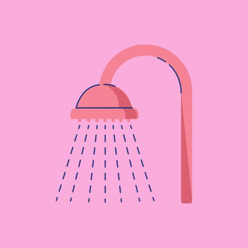
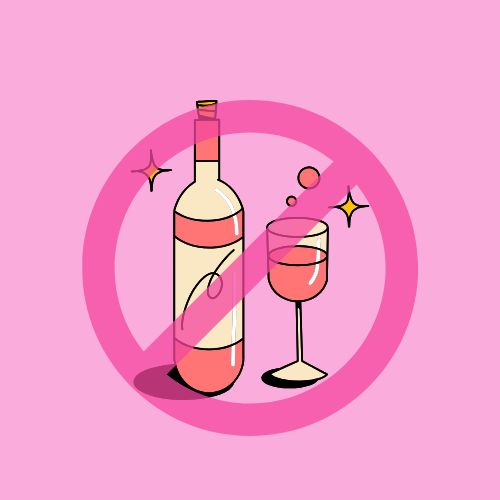
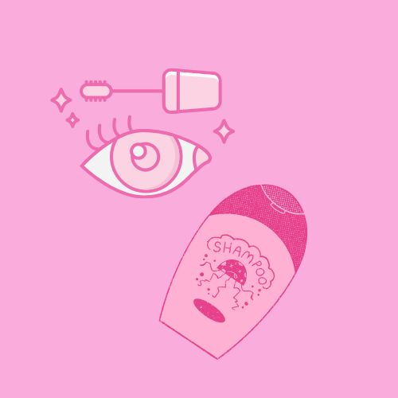
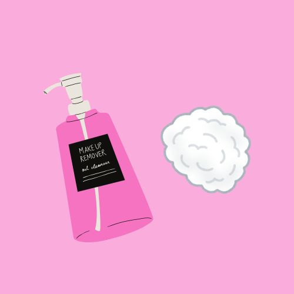
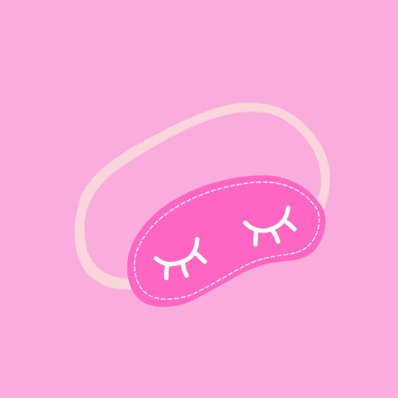
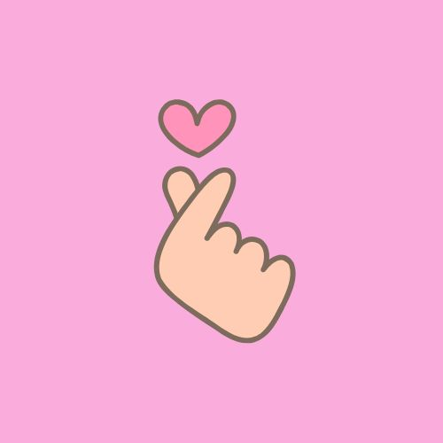

TIPS DE CUIDADO DE PESTAÑAS
1
2
3
4
5
6
Evita agua y vapores las primeras 24hs despues de la aplicación, ya que eso puede generar desprendimientos
Para no afectar la retención, evita el consumo de bebidas alcoholicas un dia antes y un dia despues de la aplicación
Diariamente higieniza con Lash Shampoo y peinalas con tu cepillito de pestañas
No utilices desmaquillantes con bases aceitosas en esa zona
No duermas boca abajo, ni las frotes, eso hara que se aplasten y se desprendan mas rapido
En caso de querer quitartelas ¡No las arranques! Acudí a tu lashista de confianza para realizar el retiro de forma adecuada
     